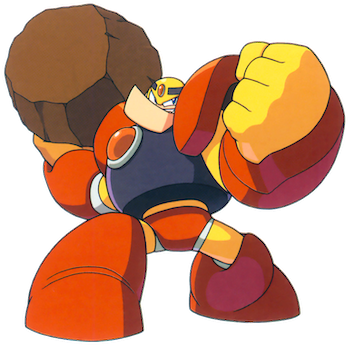

This is the main walkthrough section of the website. You can play through the levels in the order suggested in the table of contents below; there will be buttons at the bottom of each section to take you to the next and previous parts. Alternatively, you can click on one of the levels in the table if you need help with a specific level.
Table of Contents
B) Guts Man's Stage
Reaching The Boss
This first level takes place in a mountainous area which has been partially made into some kind of construction site. Tip: Use this initial starting area to become familiar with the controls while you can still practice them in a safe area. It gets tough from here on out. Get used to jumping, shooting, and most importantly, jumping AND shooting. How revolutionary. When you are ready, move onwards to really start the level...
Make your way up the first few ledges to the right while looking out for several of our first type of enemy, a Metall. I won't go into great detail regarding the regular enemies here; for that, you can refer to the enemy guide which is linked to at the top of the page. The best way to get past these guys here without taking any damage is to jump and shoot them when they reveal their shadowy little faces. You can't hit them when their hard hat is protecting them, so get rid of them before jumping to the ledge where they reside or risk taking damage from their triple beam shot. If you're lucky, they may drop a health power-up; these are small yellow spheres which come in two sizes, large and small. Naturally, the larger ones restore more health, though hopefully you have no real need for them yet. (They may also drop tiny orange balls which do nothing except add to your point total... so don't worry about collecting those, except for bragging rights.)
After making your way past these first few Metalls, you'll be on the edge of a high ledge. The next part can be extremely tricky (yes, even though we're only at the very start), so don't feel bad if you mess it up and die a lot of times. I should also mention, there's no shame in using save states or the Legacy Collection's rewind feature here; it can be very frustrating without them. What you need to do is jump on the horizontally-moving green platform when it's coming towards you, and ride it over to the right. Then, carefully timing your jumps, you need to jump down to the platform below you, and then again to the platform below that, keeping in mind that the bottom two platforms will flip downwards when the rail becomes thin and you won't be able to stand on them when this happens (Mega Man falls like an incredibly heavy rock here). This first part really is quite unforgiving, so again, use any helpful features if you're playing a more modern version and keep trying, jumping at key moments. When you do finally make it to the rightmost part of the lowest platform, make one more giant leap of faith to get back to safe ground again. Sweet, safe ground.
Except it's not really that safe. Continue right and you'll be brutally assaulted by a group of green Bunby Helis. There isn't an easy way to get past these guys unscathed; I recommend rushing past them to the right, jumping and shooting with very precise timing to get rid of them (thankfully, they die in only one hit). You should make it through if you mash the shoot button. After that short bout of hell, you'll be able to climb a few ledges again to find... a large health pickup! This restores about half of your health bar which hopefully makes up for any damage you took a moment ago.
Enjoy the health while you can as now we must fight an enemy which sadly does not die in one hit. This pickaxe-wielding Pickelman can hit you from near and far. The best strategy is to again mash the shoot button, starting far away from them and slowly moving towards them to avoid their pickaxes. Climb onto the metal scaffolding and you'll have to deal with several more, one of whom is standing on a ledge over a gap. This is annoying because it makes the 'move in slowly' strategy impossible to do properly without falling into a bottomless pit. Just mash shoot and hope you only take a small bit of damage, then jump over the gap and then another slightly wider one. Don't fall into the spike pit! That's an instant (painful) death. Deal with one more irritating Pickelman and then drop down the metal blocks.
The next few screens are a series of scaffolding areas that you might be able to land on, or might miss entirely by falling down. The first screen only has a couple of Bunby Helis. They're easily defeated by shooting left but there's no real need to land here. On the second screen, there is another nice large health pickup which is hard to, well, pick up, because it's nested in a tight alcove between two towers of scaffolding. Try to fall into it from above if you can, but this is very tricky and much easier to get with an item which we won't get until Elec Man's stage, so probably leave it for now. There are two small health pickups at the left, so defeat more Helis if you want them. These restore much less health than their larger counterparts which is why they usually come in groups. Also, you'll notice a blue item which looks like Mega Man's arm. This restores weapon power, but since you do not yet have any weapons apart from the default Mega Buster (which has unlimited ammo) it won't do anything for you, so ignore it and keep heading down. Hold left while falling to make sure you don't hit those spikes! And don't even try to approach them from the left; even the smallest touch is fatal and spells instant death. If you're lucky and fell down the middle gap from above, you might be able to hold left to get to the high ledge. You'll see Mega Man's disembodied head on the leftmost ledge... eerie. No, this isn't a message from the mob, but is instead an extra life, or 1-up. It's tricky to make the jump over to it though, even from high up, and we'd need that aforementioned item to be able to easily get that 1-up. Don't worry, we'll get it... in time. If you haven't died yet you will still have 2 extra lives (you can check this on the weapons subscreen by pressing your console's equivalent of the start button). Having 2 extra lives on the menu means that you actually have 3 lives to lose before getting a game over. It's confusing, but just remember, you technically have one more life than the number shown on the subscreen.
Anyway, make sure you get the health pickup near the spikes then fall down one more time to reach the final stretch of the level. We'll have to face a kind of miniboss here, known as a Big Eye. These guys... can be a pain. They can kill Mega Man in THREE hits by jumping on him, and while they can definitely be taken down, they take a lot of hits. You could either:
- Start shooting at it to the right as soon as you fall into this final stretch, and hope you can run under it when it jumps. Keep shooting at it now that you're to the right of it and you should be able to kill it.
- Alternatively, just run past it and don't focus on attacking it. Try to get under it when it jumps high so you can make it past without getting hurt. It's hard to predict when it'll jump high or low, though, so take one hit if you must, and just get to the right.
Hopefully you still have a nice bit of health left... only a tiny bit left now until the boss. Run right to the sliding doors to enter one more corridor with a few easy-to-beat enemies inside. It's just a couple of Metalls that we saw at the start of this level, and they're all on level ground with you so there's no need to even jump around. Just shoot forward. If you mash shoot repeatedly, you're almost guaranteed to be able to get past them all without taking even a single hit. There's a fair chance they could drop some health pickups too, which is good because you'll need them now more than ever. When you're ready, head into the door on the right to face our boss... Guts Man.
Boss Fight: Guts Man
Time for our first real battle! Guts Man's main method of attacking is to jump in the air and then collide with the ground to cause a minor earthquake, which will temporarily freeze Mega Man in place for a brief moment. He'll often pick up a giant boulder right after this and hurl it in your direction. That's it, really. You just need to learn how to dodge this, and you should be okay. When he causes the earthquake, jump in the air to avoid being paralysed, and shoot at him as much as you can. If he throws a boulder, do a high jump over the fragments of rock that it splits into and keep shooting. It's easier to avoid the debris when he's further away, but he'll start to creep closer to you as the fight draws on. When this happens, try to run under him and get to the opposite side of the room. You might take a hit but it's okay. In general, you want to be as far away from him as possible. It might be slightly harder to dodge his rocks when he's standing on the left because he does have a bit of a high ground advantage, but as said before, you should be alright if you stay further away. Keep up this pattern of dodging the rocks and shooting him as much as you can. It takes a while and it's repetitive, but it works.
Don't worry if you die; hopefully you still have at least one extra life, in which case you'll reappear in the corridor just before the boss. At least you'll come back with your full health bar, which helps a lot as this fight is really a battle of endurance. Oh, and also, if you happen to have already completed Bomb Man's stage, then use the Hyper Bomb weapon against him. This is his weakness and it does a TON more damage, around 5x more than just the Mega Buster. The Mega Buster hurts him slightly more than all of the other weapons though, which is why it's a good idea to do this level first and get it out of the way. (You could also use his own weapon to pick up the two boulders on the left and give him a taste of his own medicine, but it's unlikely you'd be playing this stage if you already have it.)
When he finally goes down, pick up the glowing sphere he leaves behind to complete the first level! By doing this, you'll also earn Guts Man's weapon to use in future stages, the Super Arm.
New Weapon: Super Arm
The Super Arm allows you to pick up boulders and throw them at enemies. It's pretty powerful but you need to be in front of a rock or large block to use it, so you can only use it in very specific places. Press the shoot button in front of a glowing rock or block to pick it up, and press again to throw it.
Guts Man's icon will now have a black background on the level select menu indicating that you've beaten him. Our second robot master will be Cut Man, so select him to continue.